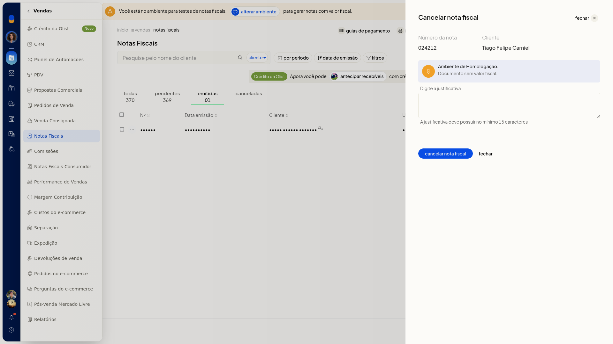
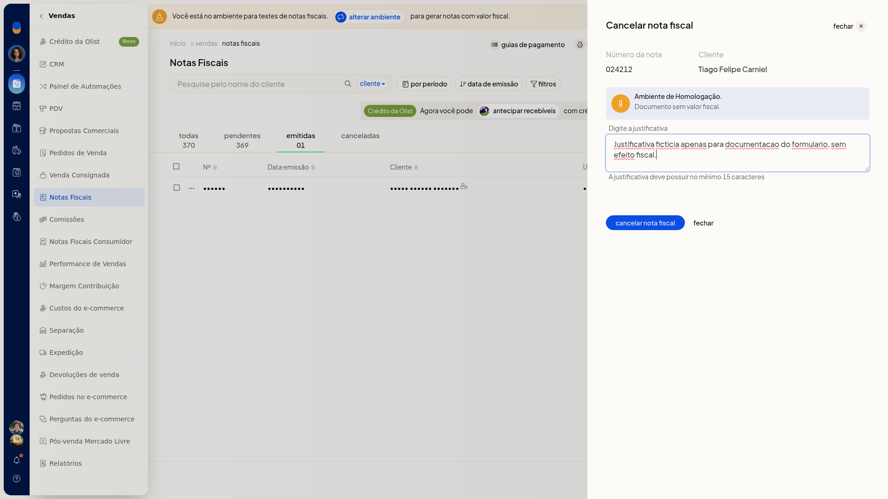

Cancelar nota fiscal
Importante
- Cancelar NFe aparece no menu da nota emitida. Na nota pendente, essa opção não aparece.
- A justificativa precisa ter no mínimo 15 caracteres.
Instruções
-
Acesse Vendas > Notas Fiscais.
-
Localize a nota emitida. Use a aba Emitidas para separar essas notas das pendentes.
-
Na linha da nota, abra o menu de ações.

-
Clique em Cancelar NFe.

-
Digite a justificativa com no mínimo 15 caracteres.
